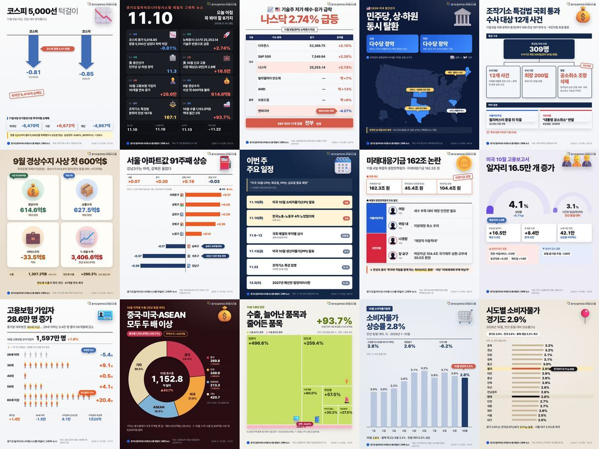

11.10.(화) 데일리 그래픽뉴스
오늘의 일자리·경제 뉴스·통계 15건

- 01코스피 5,000선 턱걸이한국거래소 증시 시황(26.11.9)
- 02오늘 아침 꼭 봐야 할 8가지각 기관 발표(26.11.4~10)
- 03나스닥 2.74% 급등뉴욕증권거래소(NYSE) 뉴욕증시 마감(26.11.9)
- 04민주당, 상·하원 동시 탈환미국 중간선거 개표결과(26.11.4)
- 05조작기소 특검법 국회 통과국회 본회의 표결(26.11.6)
- 069월 경상수지 사상 첫 600억$한국은행 9월 국제수지(26.11.5)
- 07서울 아파트값 91주째 상승한국부동산원 주간 아파트 가격동향(26.11.5)
- 08이번 주 주요 일정각 기관 공표 일정(26.11.10)
- 09미래대응기금 162조 논란국회 예산결산특별위원회 종합정책질의(26.11.4)
- 10미국 10월 고용보고서미국 노동통계국 10월 고용보고서(26.11.6)
- 11고용보험 가입자 28.6만 명 증가고용노동부 10월 고용행정 통계(26.11.9)
- 12중국·미국·ASEAN 모두 두 배 이상산업통상부 10월 수출입동향(2026.11.1)
- 13수출, 늘어난 품목과 줄어든 품목산업통상부 10월 수출입동향(26.11.1)
- 14소비자물가 상승률 2.8%국가데이터처 10월 소비자물가동향(26.11.3)
- 15시도별 소비자물가 경기도 2.9%KOSIS 소비자물가 등락률(26.10)
경기도 31개 시군 일자리 통계는 경기도일자리모니터링시스템에서 확인하세요
stats.gjf.or.kr 바로가기본 카드뉴스는 AI를 활용해 제작하고 경기도일자리재단 데이터팀이 검수하였습니다. 수치 인용 시 원문을 확인해 주시기 바랍니다.